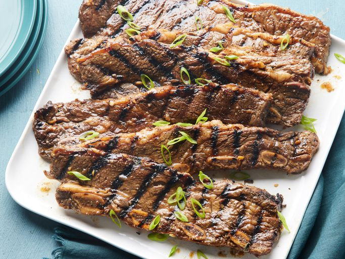

Korean BBQ

Description
When John Chandler submitted this lasagna recipe to Allrecipes more than 20 years ago, he had no idea how successful it would become. One of our top-performing recipes of all time, World's Best Lasagna racks up more than 7 million views per year and has ranked among the most popular lasagna recipes on the internet for two decades. Unfortunately, John unexpectedly passed away at 53 years old
Ingredients
- ¾ cup soy sauce
- ¾ cup water
- 3 tablespoons white vinegar
- 2 tablespoons sesame oil
- ½ large onion, minced
- ¼ cup minced garlic
- ¼ cup dark brown sugar
- 2 tablespoons white sugar
- 1 tablespoon black pepper
- 3 pounds Korean-style short ribs (beef chuck flanken, cut 1/3- to 1/2-inch-thick across bones)
Steps
- Gather all ingredients.
- Pour soy sauce, water, vinegar, and sesame oil into a large, non-metallic bowl. Whisk in onion, garlic, brown sugar, white sugar, and pepper until sugars dissolve.
- Submerge ribs in marinade; cover the bowl and refrigerate 7 to 12 hours -the longer, the better.
- Preheat an outdoor grill for medium-high heat. Remove ribs from marinade and shake off excess; discard marinade.
- Cook on the preheated grill until the meat is no longer pink, 5 to 7 minutes per side.
- Serve and enjoy!
Home